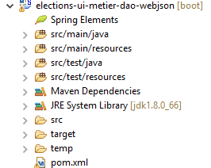
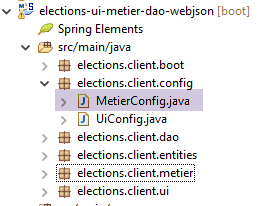
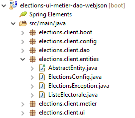

15. [TD]: aanmaken van een client voor de webservice
Trefwoorden: meerlaagse architectuur, Spring, afhankelijkheidsinjectie, webservice / jSON, client / server
15.1. Support
 |
De projecten uit dit hoofdstuk zijn te vinden in de map [support / chap-15].
15.2. De client/server-architectuur
We willen de volgende client/server-architectuur opzetten:
 |
De laag [ui] is dezelfde die al in de paragrafen 9 en 10 is ontwikkeld. Dit is mogelijk omdat de hierboven genoemde laag [métier] dezelfde interface [IElectionsMetier] implementeert als de laag [métier] uit paragraaf 8:
package elections.client.metier;
import elections.client.entities.ListeElectorale;
public interface IElectionsMetier {
// de concurrerende lijsten ophalen
public ListeElectorale[] getListesElectorales();
// het aantal te vervullen zetels
public int getNbSiegesAPourvoir();
// de kiesdrempel
public double getSeuilElectoral();
// de registratie van de resultaten
public void recordResultats(ListeElectorale[] listesElectorales);
// de berekening van de zetels
public ListeElectorale[] calculerSieges(ListeElectorale[] listesElectorales);
}
In paragraaf 7 wisselde de laag [DAO] gegevens uit met een SGBD. Hier wisselt de laag [DAO] gegevens uit met een webserver / jSON.
In eerste instantie zullen we ons richten op de volgende architectuur:
 |
15.3. Het Eclipse-project
Het Eclipse-project ziet er als volgt uit:
 |  |  |
Deze structuur komt overeen met die van het voorbeeldproject in paragraaf 13.6.1. We zullen dezelfde aanpak volgen.
15.4. Maven-configuratie
Deze is beschreven in paragraaf 13.6.2.
15.5. Implementatie van de laag [DAO]
 |
|
- het pakket [elections.client.config] bevat de Spring-configuratie van de laag [DAO];
- het pakket [elections .client.dao] bevat de implementatie van de laag [DAO];
- het pakket [elections .client.entities] bevat de objecten die worden uitgewisseld met de webservice / jSON;
- het pakket [elections .client.metier] bevat de laag [métier]
- het pakket [elections .client.ui] bevat de laag [UI]
15.5.1. Configuratie van de laag [métier]
 |
De klasse [MetierConfig] zorgt voor de Spring-configuratie van de laag [métier]. De code ervan is als volgt:
package elections.client.config;
import org.springframework.beans.factory.config.ConfigurableBeanFactory;
import org.springframework.context.annotation.Bean;
import org.springframework.context.annotation.ComponentScan;
import org.springframework.context.annotation.Scope;
import org.springframework.http.client.HttpComponentsClientHttpRequestFactory;
import org.springframework.web.client.RestTemplate;
import com.fasterxml.jackson.databind.ObjectMapper;
@ComponentScan({ "elections.client.dao","elections.client.metier" })
public class MetierConfig {
// constanten
static private final int TIMEOUT = 1000;
static private final String URL_WEBJSON = "http://localhost:8080";
@Bean
public RestTemplate restTemplate(int timeout) {
// aanmaken van de component RestTemplate
HttpComponentsClientHttpRequestFactory factory = new HttpComponentsClientHttpRequestFactory();
RestTemplate restTemplate = new RestTemplate(factory);
// time-out van de uitwisselingen
factory.setConnectTimeout(timeout);
factory.setReadTimeout(timeout);
// resultaat
return restTemplate;
}
@Bean
public int timeout() {
return TIMEOUT;
}
@Bean
public String urlWebJson() {
return URL_WEBJSON;
}
// mapper jSON
@Bean
@Scope(value = ConfigurableBeanFactory.SCOPE_PROTOTYPE)
public ObjectMapper jsonMapper() {
return new ObjectMapper();
}
}
Deze code is uitgelegd in paragraaf 13.6.3.1. Deze is eenvoudiger omdat er hier geen jSON-filters hoeven te worden beheerd.
15.5.2. De entiteiten
 |
De entiteiten die door de lagen [DAO] en [métier] worden verwerkt, zijn de entiteiten die zij uitwisselen met de webservice / jSON. Dit zijn de objecten van het type [ElectionsConfig] en [ListeElectorale]. Aan de serverzijde hadden deze entiteiten persistentie-annotaties JPA. Hier zijn deze annotaties verwijderd. Ter herinnering geven we de code van de entiteiten nogmaals weer:
[AbstractEntity]
package spring.webjson.client.entities;
public abstract class AbstractEntity {
// eigenschappen
protected Long id;
protected Long version;
// constructors
public AbstractEntity() {
}
public AbstractEntity(Long id, Long version) {
this.id = id;
this.version = version;
}
// herdefinitie van [equals] en [hashcode]
@Override
public int hashCode() {
return (id != null ? id.hashCode() : 0);
}
@Override
public boolean equals(Object entity) {
if (!(entity instanceof AbstractEntity)) {
return false;
}
String class1 = this.getClass().getName();
String class2 = entity.getClass().getName();
if (!class2.equals(class1)) {
return false;
}
AbstractEntity other = (AbstractEntity) entity;
return id != null && this.id == other.id.longValue();
}
// getters en setters
...
}
[ElectionsConfig]
package elections.webjson.client.entities;
public class ElectionsConfig extends AbstractEntity {
// velden
private int nbSiegesAPourvoir;
private double seuilElectoral;
// constructors
public ElectionsConfig() {
}
public ElectionsConfig(int nbSiegesAPourvoir, double seuilElectoral) {
this.nbSiegesAPourvoir = nbSiegesAPourvoir;
this.seuilElectoral = seuilElectoral;
}
// getters en setters
...
}
[ListeElectorale]
package elections.webjson.client.entities;
public class ListeElectorale extends AbstractEntity {
// velden
private String nom;
private int voix;
private int sieges;
private boolean elimine;
// constructors
public ListeElectorale() {
}
public ListeElectorale(String nom, int voix, int sieges, boolean elimine) {
setNom(nom);
setVoix(voix);
setSieges(sieges);
setElimine(elimine);
}
// getters en setters
...
}
15.5.3. De interface van de laag [DAO]
 |
De laag [DAO] heeft de volgende interface [IClientDao]:
package elections.client.dao;
public interface IClientDao {
// generieke query
String getResponse(String url, String jsonPost);
}
De interface heeft slechts één methode, [getResponse]:
- de eerste parameter is de URL van de te raadplegen server;
- de tweede parameter is de waarde jSON van de te verzenden waarde, null als er niets te verzenden is;
- het resultaat is de tekenreeks jSON van een object [Response<T>], waarbij de klasse [Response] in paragraaf 14.7 is beschreven;
15.5.4. Implementatie van de uitwisselingen met de webservice / jSON
 |
De klasse [ClientDao] implementeert de interface [IClientDao] als volgt:
package elections.client.dao;
import java.net.URI;
import java.net.URISyntaxException;
import org.springframework.beans.factory.annotation.Autowired;
import org.springframework.core.ParameterizedTypeReference;
import org.springframework.http.MediaType;
import org.springframework.http.RequestEntity;
import org.springframework.stereotype.Component;
import org.springframework.web.client.RestTemplate;
import elections.client.entities.ElectionsException;
@Component
public class ClientDao implements IClientDao {
// gegevens
@Autowired
protected RestTemplate restTemplate;
@Autowired
protected String urlServiceWebJson;
// generieke aanvraag
@Override
public String getResponse(String url, String jsonPost) {
try {
// URL: URL (contact opnemen)
// jsonPost: de waarde jSON moet worden verzonden
// verzoek uitvoeren
RequestEntity<?> request;
if (jsonPost != null) {
// verzoek POST
request = RequestEntity.post(new URI(String.format("%s%s", urlServiceWebJson, url)))
.header("Content-Type", "application/json").accept(MediaType.APPLICATION_JSON).body(jsonPost);
} else {
// verzoek GET
request = RequestEntity.get(new URI(String.format("%s%s", urlServiceWebJson, url)))
.accept(MediaType.APPLICATION_JSON).build();
}
// de query wordt uitgevoerd
return restTemplate.exchange(request, new ParameterizedTypeReference<String>() {
}).getBody();
} catch (URISyntaxException e1) {
throw new ElectionsException(200, e1);
} catch (RuntimeException e2) {
throw new ElectionsException(201, e2);
}
}
}
Deze code is beschreven in paragraaf 13.6.3.6.
15.6. Implementatie van de laag [métier]
 |
Zoals gezegd heeft de laag [métier] dezelfde interface [IElectionsMetier] als in paragraaf 8.4:
package elections.client.metier;
import elections.client.entities.ListeElectorale;
public interface IElectionsMetier {
// de lijsten van de deelnemende kandidaten ophalen
public ListeElectorale[] getListesElectorales();
// het aantal te vervullen zetels
public int getNbSiegesAPourvoir();
// de kiesdrempel
public double getSeuilElectoral();
// de registratie van de resultaten
public void recordResultats(ListeElectorale[] listesElectorales);
// de zetelverdeling
public ListeElectorale[] calculerSieges(ListeElectorale[] listesElectorales);
}
Deze interface wordt geïmplementeerd door de volgende klasse [ElectionsMetier]:
package elections.client.metier;
import java.util.ArrayList;
import java.util.List;
import javax.annotation.PostConstruct;
import org.springframework.beans.factory.annotation.Autowired;
import org.springframework.context.ApplicationContext;
import org.springframework.stereotype.Component;
import com.fasterxml.jackson.core.type.TypeReference;
import com.fasterxml.jackson.databind.ObjectMapper;
import elections.client.dao.IClientDao;
import elections.client.entities.ElectionsConfig;
import elections.client.entities.ElectionsException;
import elections.client.entities.ListeElectorale;
@Component
public class ElectionsMetier implements IElectionsMetier {
@Autowired
private IClientDao dao;
@Autowired
private ApplicationContext context;
// de opzet van de verkiezing
private ElectionsConfig electionsConfig;
@PostConstruct
public void init() {
// toewijzers jSON
ObjectMapper mapperResponse = context.getBean(ObjectMapper.class);
try {
// verzoek
Response<ElectionsConfig> response = mapperResponse.readValue(dao.getResponse("/getElectionsConfig", null),
new TypeReference<Response<ElectionsConfig>>() {
});
// fout?
if (response.getStatus() != 0) {
// er wordt 1 uitzondering gegenereerd
throw new ElectionsException(response.getStatus(), response.getMessages());
} else {
electionsConfig = response.getBody();
}
} catch (ElectionsException e1) {
throw e1;
} catch (Exception e2) {
throw new ElectionsException(100, getMessagesForException(e2));
}
}
@Override
public ListeElectorale[] getListesElectorales() {
...
}
@Override
public int getNbSiegesAPourvoir() {
return electionsConfig.getNbSiegesAPourvoir();
}
@Override
public double getSeuilElectoral() {
return electionsConfig.getSeuilElectoral();
}
@Override
public void recordResultats(ListeElectorale[] listesElectorales) {
...
}
@Override
public ListeElectorale[] calculerSieges(ListeElectorale[] listesElectorales) {
...
}
// lijst met foutmeldingen van een uitzondering
private List<String> getMessagesForException(Exception exception) {
// de lijst met foutmeldingen van de uitzondering wordt opgehaald
Throwable cause = exception;
List<String> erreurs = new ArrayList<String>();
while (cause != null) {
// het bericht wordt alleen opgehaald als het !=null is en niet leeg
String message = cause.getMessage();
if (message != null) {
message = message.trim();
if (message.length() != 0) {
erreurs.add(message);
}
}
// volgende oorzaak
cause = cause.getCause();
}
return erreurs;
}
}
Het type [Response] dat op regel 37 wordt gebruikt, is het antwoord van de webserver / jSON zoals beschreven in paragraaf 14.7;
Te doen: vul, volgens paragraaf 13.6.3.7, de klasse [ElectionsMetier] aan;
15.7. De Junit-test
Laten we terugkeren naar de client/server-architectuur die we aan het opbouwen zijn:
 |
De laag [JUnit] [1] communiceert met de laag [Métier] van de server [5] via de lagen [2-4]. Door ervoor te zorgen dat de lagen [Métier], [2] en [5] dezelfde interface hebben, worden de lagen [2-4] transparant gemaakt. De laag [1] lijkt rechtstreeks te communiceren met de laag [5]. Het interessante is dat we in [1] de test JUnit kunnen gebruiken die eerder was gebruikt om de lagen [Métier] en [5] te testen.
|
Te doen: voer de test JUnit van het project uit om zowel de implementatie als de server en de client te controleren.
15.8. Implementatie van de laag [UI]
Laten we terugkeren naar de architectuur die we willen bouwen:
 |
Nu de laag [métier] [2] is gebouwd en getest, kunnen we de laag [ui] [1] bouwen.
 |
Aangezien de interface [IElectionsMetier] van de laag [métier] identiek is aan die van het in paragraaf 8 beschreven project, kunnen we in [3] het project van de laag [ui] uit paragraaf 10 kopiëren. Dit project was een NetBeans-project. Het volstaat om de betreffende Java-klassen vanuit NetBeans naar Eclipse te kopiëren en te plakken. Nadat dit is gebeurd, moeten er aanpassingen worden gedaan aan de pakketten en de imports.
Hetzelfde doen we voor de uitvoerbare klassen van de pakketten [elections.client.boot] en [4].
De klasse [AbstractBootElections] is als volgt:
package elections.client.boot;
import org.springframework.context.annotation.AnnotationConfigApplicationContext;
import elections.client.config.UiConfig;
import elections.client.entities.ElectionsException;
import elections.client.ui.IElectionsUI;
public abstract class AbstractBootElections {
// ophalen van de Spring-context
protected AnnotationConfigApplicationContext ctx;
public void run() {
// instantiëren van de laag [ui]
IElectionsUI electionsUI = null;
try {
// ophalen van de Spring-context
ctx = new AnnotationConfigApplicationContext(UiConfig.class);
// ophalen van de laag [ui]
electionsUI = getUI();
...
- regel 19: de Spring-context die wordt gedefinieerd door de configuratieklasse [UiConfig] wordt geïnstantieerd. Deze klasse is als volgt:
 |
De klasse [UiConfig] is als volgt:
package elections.client.config;
import org.springframework.context.annotation.ComponentScan;
import org.springframework.context.annotation.Import;
@Import(MetierConfig.class)
@ComponentScan(basePackages = { "elections.client.ui" })
public class UiConfig {
}
- regel 6: de beans van de laag [métier] worden geïmporteerd;
- regel 7: er wordt aangegeven dat er Spring-beans in het pakket [elections.client.ui] zitten;
Te doen: controleer of de console- en Swing-versies van de laag [ui] werken.